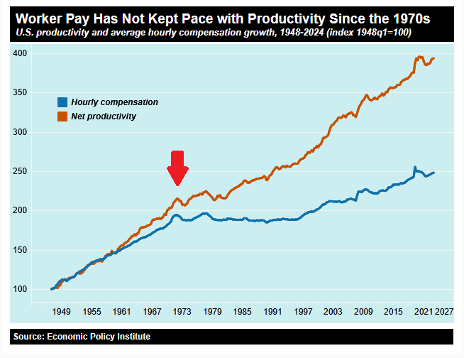
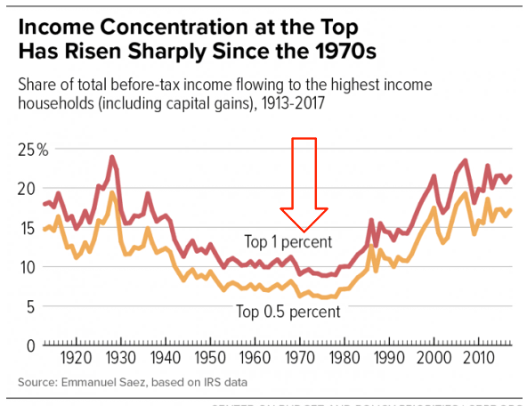
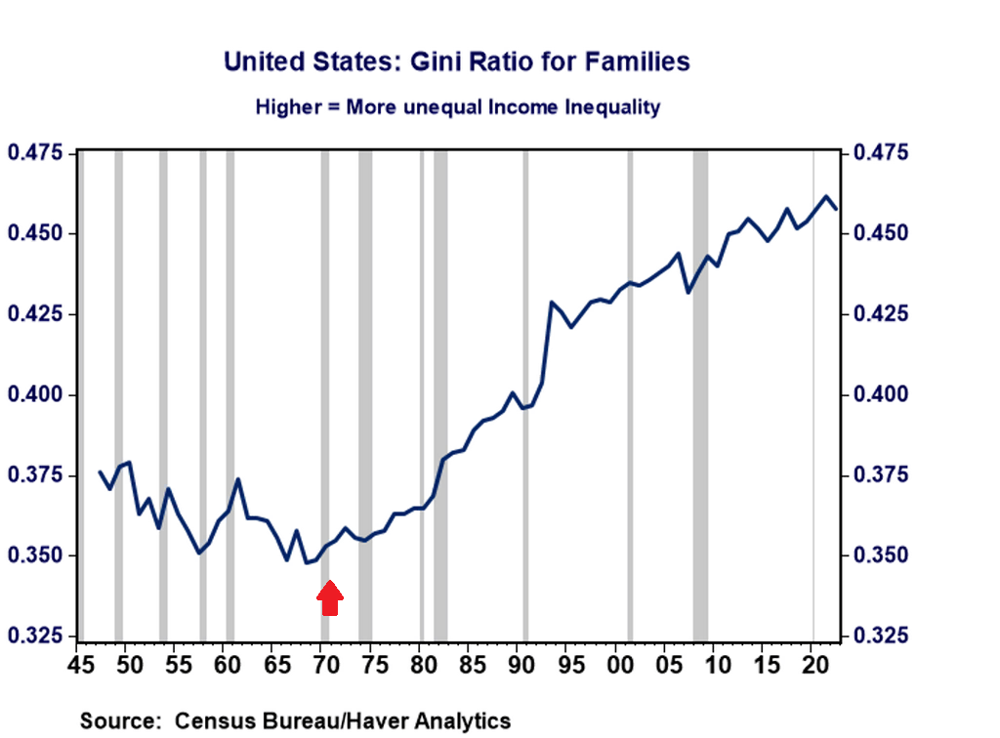

The Year Everything Changed
In August 1971, President Nixon ended the Bretton Woods system, severing the dollar's link to gold. This single decision unleashed a cascade of economic changes that fundamentally altered American life.
The data speaks for itself: Nearly every chart measuring American prosperity shows a dramatic shift around 1971. Wages flatlined. Inequality soared. Housing became unaffordable. The American Dream began its slow death.
Productivity vs Wages
Productivity continued rising, but wages stopped following
Income Inequality
Top 1% income share exploded after 1971
Housing Affordability
Median home price vs median income diverged
Dollar Purchasing Power
The dollar lost 85% of its value since 1971

Economic Indicators
Multiple data points showing the 1971 inflection
A Generation of Sociopaths
Bruce Cannon Gibney's controversial thesis: The Baby Boomer generation's self-serving policies created these trends.
- 1971: Gold Standard Abandoned — Enabled unlimited money printing to fund present consumption at future expense
- 1980s: Tax Cuts for Wealthy — Reagan-era policies shifted burden to working class while enriching top earners
- Deregulation — Removed guardrails that prevented corporate abuse and financial crises
- Student Debt Explosion — Made education unaffordable, saddling younger generations with debt Boomers never faced
- Environmental Neglect — Kicked climate costs down to children and grandchildren
The data suggests Gibney may have a point. Every major policy shift benefited Boomers at the expense of future generations. The charts don't lie.
Why This Matters
Understanding what happened in 1971 helps explain:
- Why millennials and Gen Z can't afford homes
- Why wages feel stagnant despite "economic growth"
- Why college is unaffordable
- Why retirement seems impossible
- Why political polarization has increased
The data doesn't lie. Something fundamental changed in 1971.